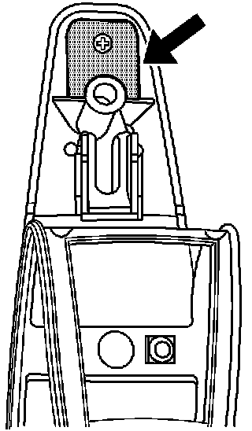
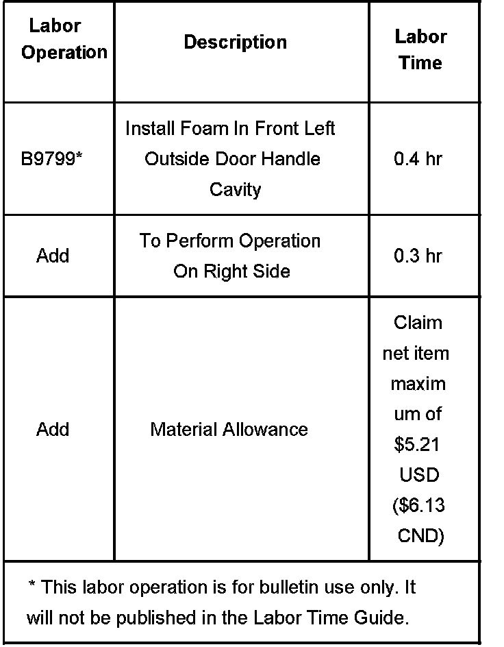

A/C - Whistle Noise With Blower On High
Bulletin No.: 06-08-64-029Date: August 11, 2006
TECHNICAL
Subject:
Whistle Noise Heard With HVAC Blower On High (Install Foam Strip in Door Handle)
Models:
2007 Cadillac Escalade Models
2007 Chevrolet Avalanche, Suburban, Tahoe
2007 GMC Yukon Models
Condition
Some customers may comment on a whistle noise heard when the HVAC blower is on high speeds.
Cause
When the HVAC is on high speed, an increase in cabin pressure causes air to rush through the outside door handles.
Correction
Install a foam strip in the door handle.
1. Remove the door handle. Refer to Front Side Door Outside Handle Replacement in SI.
2. Cut a piece of foam 13 mm (1/2 in) in thickness by 19 mm (3/4 in) long by 19 mm (3/4 in) wide.
3. Lift up the handle gasket in the area of the locator pin.

4. Place the foam over the locator pin and push the locator pin through the foam as seen in the illustration above.
5. Install the handle gasket.
6. Install the door handle. Refer to Front Side Door Outside Handle Replacement in SI.
Parts Information
Purchase locally.
Warranty Information

For vehicles repaired under warranty, use the table.

Disclaimer